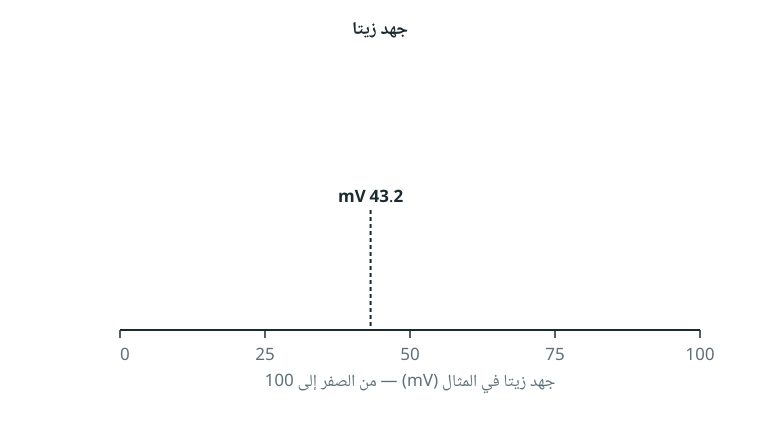

جهد زيتا
Zeta potential
جهد زيتا ζ هو فرق الجهد الكهربائي عند سطح الانزلاق بين الجسيم الغروي والوسط المحيط به. ويقيس استقرار المستحلب أو المعلق: قيمته الكبيرة (أكثر من 30 mV مطلقاً) تعني استقراراً أعلى ضد التكتل.
الجسيم الغروي في وسط سائل يكتسب شحنة سطحية تجذب أيونات معاكسة من الوسط، فتتكون طبقة مزدوجة كهربائية. والطبقة الداخلية ثابتة مع الجسيم، والخارجية تتحرك مع السائل. وحدّ الفصل بينهما هو سطح الانزلاق، والجهد عنده هو جهد زيتا. مثال: معلق طيني بجهد زيتا −45 mV يكون مستقراً لأن التنافر الكهربائي بين الجسيمات يمنع تكتلها. وإذا أُضيف ملح حتى انخفض الجهد إلى −5 mV بدأت الجسيمات تتكتل وترسب.
كيف تعمل الظاهرة؟
سطح الجسيم يكتسب شحنة إما بتأين مجموعات سطحية أو بامتزاز أيونات. وتجذب هذه الشحنة أيونات معاكسة من الوسط، فتتكون طبقة مزدوجة: طبقة داخلية مرتبطة بالسطح وطبقة انتشارية خارجية. وعند تحرك الجسيم ينزلق السائل عند حدّ بين الطبقتين، والجهد عند هذا الحد هو جهد زيتا. وكلما زاد تركيز الملح في الوسط انضغطت الطبقة الانتشارية وانخفض جهد زيتا، ولهذا تسبب الأملاح تكتل المستحلبات.
العلاقة بالأرقام
ζ = η·u/ε، وسماكة طبقة ديباي κ⁻¹ = √(ε·k_B·T/(2N_A·e²·I)). مثال: في ماء عند 25 °C وتركيز أيوني 0.0100 mol/L تكون سماكة الطبقة نحو 3.0 nm، وعند 0.100 mol/L تنخفض إلى نحو 1.0 nm. ولهذا تنخفض الحواجز التنافرية وتتكتل الجسيمات عند إضافة الملح.
مفاهيم متقاربة
يُفرَّق بين جهد زيتا وجهد السطح: الأول عند سطح الانزلاق والثاني عند السطح الفعلي، والأول أصغر. ويُفرَّق بين جهد زيتا وجهد القطب: الأول لسطح غروي والثاني لسطح إلكتروني. ويُفرَّق بين جهد زيتا في الماء وجهد زيتا في المذيبات العضوية، حيث السماحية أصغر بكثير. وأخيراً يُفرَّق بين جهد زيتا المقيس بالحركة الكهربائية والمحسوب من نظرية، والثاني يحتاج افتراضات.
حدود التطبيق
جهد زيتا لا يقيس استقرار المعلق وحده، بل يلزم معه معرفة الحواجز الفراغية والتركيب. ولا يصلح في المستحلبات ذات القطرات الكبيرة حيث تهيمن قوى أخرى. ولا يُقاس بدقة في الأوساط عالية التوصيل حيث تتداخل التأثيرات الكهربائية. وأخيراً لا يصف استقرار المعلق على المدى الطويل، حيث قد يحدث تكتل بطيء حتى مع جهد عالٍ.

| الكمية | القيمة | المصدر |
|---|---|---|
| جهد زيتا في المثال | 43.2 mV | [1] |
المصادر
- 1 CODATA Value: elementary charge — NIST — CODATA 2022 recommended values (2024). physics.nist.gov/cgi-bin/cuu/Value?e · اطُّلع عليه 2026-11-22
- 2 CODATA Value: Boltzmann constant — NIST — CODATA 2022 recommended values (2024). physics.nist.gov/cgi-bin/cuu/Value?k · اطُّلع عليه 2026-11-22
استشهد بهذا المصطلح
الصيغتان مبنيتان من بيانات الصفحة نفسها: العنوان والتاريخ ورابط النسخة المنشورة.
جهد زيتا — Zeta potential. (2026). ديوان المعرفة — انفراد. https://infiradev.com/diwan/terms/term-zeta-potential.html
@misc{term-zeta-potential2026,
title = {جهد زيتا},
titleaddon = {Zeta potential},
howpublished = {{ديوان المعرفة — انفراد} — مرجع علمي عربي},
year = {2026},
url = {https://infiradev.com/diwan/terms/term-zeta-potential.html},
urldate = {2026-11-26},
note = {مراجعة علمية: hermes (مراجعة معتمدة 2026-11-26)}
}
راجعه: hermes (مراجعة معتمدة 2026-11-26) · 2026-11-26 · آخر تحديث 2026-11-22